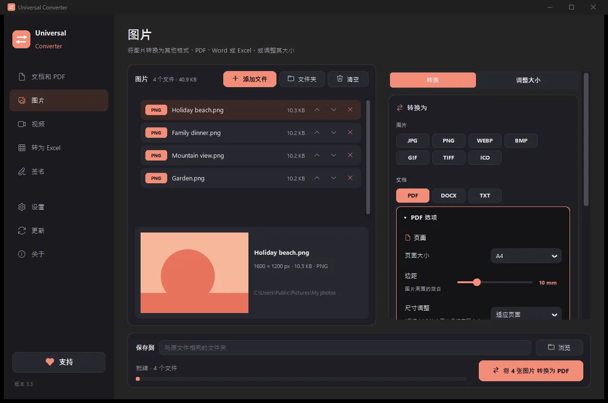
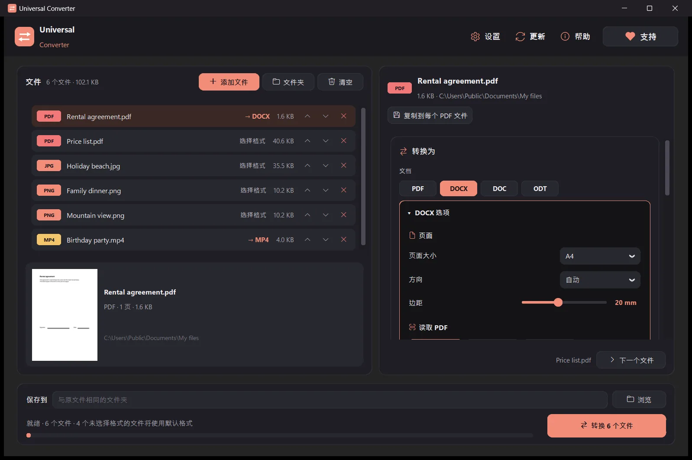
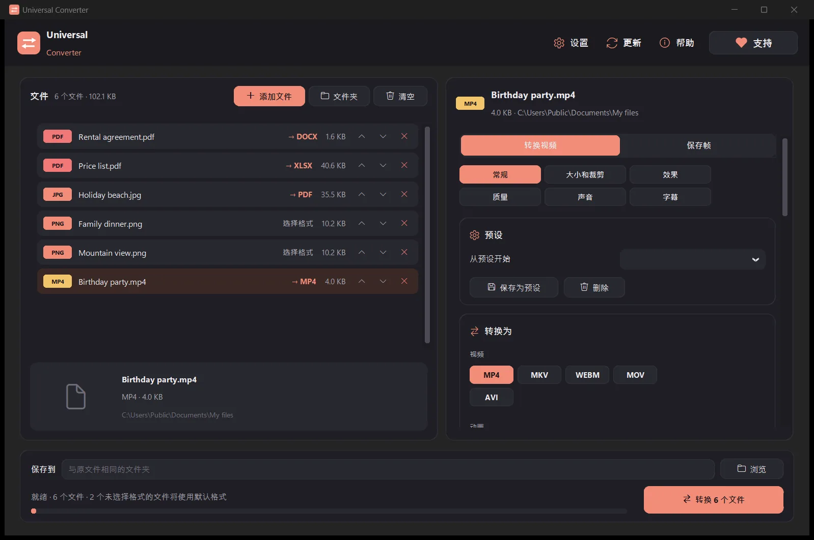
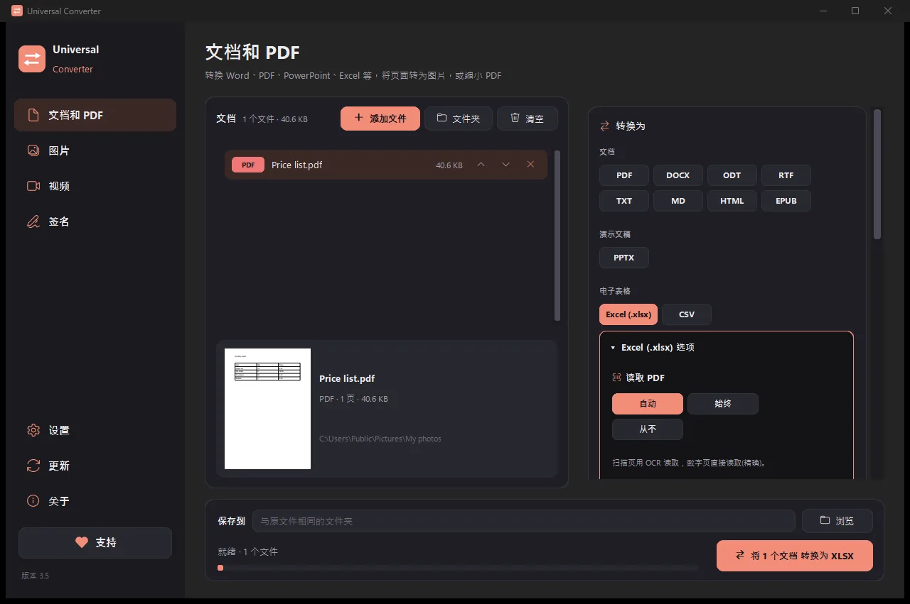
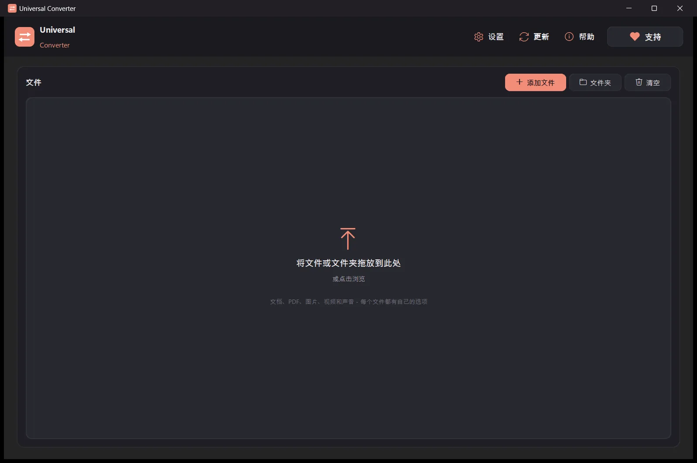

在自己的设备上转换文件
图片、文档、视频和音频、PDF 以及表格转 Excel，全部集中在一个应用里。不上传任何内容：您的文件始终留在您的设备上。
如何安装和更新
- 打开下载的 .dmg，将 Universal Converter 拖到“应用程序”。
- 打开应用。首次打开时，macOS 会因为它未经 Apple 签名而阻止：点按“完成”。
- 打开“系统设置”>“隐私与安全性”，向下滚动，点按“仍要打开”并输入密码。只需操作一次。
更新：如果您在首次打开时允许，应用每次启动都会检查新版本，验证其数字签名，并在您选择时安装。
如何安装和更新
- 在手机上点按“下载 Android 版”。
- 打开下载的文件。如果 Android 提示，请允许浏览器或文件管理器安装应用。
- 点按“安装”。
更新：每次打开应用时，它会检查是否有新版本，并在新版本可用时通知您。用同样的方式下载并覆盖安装旧版本，您的设置会保留。
如何安装和更新
- 下载 .AppImage 文件。
- 让它可以运行：右键点击，打开“属性 > 权限”，允许作为程序执行（或在终端中运行：chmod +x Universal-Converter-*.AppImage）。
- 双击它即可。无需安装：整个应用就是这一个文件。
更新：如果您在第一次打开时允许，应用每次启动都会检查新版本，验证其数字签名，并在原位置替换 AppImage 文件。

私密
所有处理都在您的设备上完成。无需上传，无需排队，没有大小限制。
免费
免费使用，没有广告，无需账号，不加水印。
34 种语言
中文、英语、希腊语、西班牙语、意大利语、德语、法语、葡萄牙语（葡萄牙和巴西）、波兰语、俄语、阿拉伯语、希伯来语、日语、韩语、泰米尔语、南非荷兰语、约鲁巴语、豪萨语、印地语、印度尼西亚语、土耳其语、越南语、瑞典语、荷兰语、丹麦语、乌克兰语、捷克语、罗马尼亚语、保加利亚语、挪威语、马来语、菲律宾语和斯瓦希里语。
一个窗口，五种工具

文档和 PDF
在 PDF、Word、ODT、RTF、TXT、Markdown、HTML、EPUB、PowerPoint 和 Excel 之间转换。把页面转成图片，把多个文件合并成一个 PDF。保留字体、字号和颜色。 将 PDF 缩小到您选择的大小。扫描件和已填写的表格会变成可编辑的文字和表格，排版与原页面一致。表格（即使像银行对账单那样没有表格线）会作为真正的表格进入 Word，旧版 Word (.doc) 和 PowerPoint (.ppt) 文件也能打开。
图片
在 JPG、PNG、WEBP、TIFF、BMP、GIF 和 ICO 之间转换。按像素、百分比或文件大小调整尺寸，把图片合并成 PDF 或 Word 文件，并识别图片中的文字（OCR）。 也可以添加 PDF：每一页都会成为一张图片。

视频
用 AV1、H.265、H.264 或 VP9 在 MP4、MKV、WebM、MOV 和 AVI 之间转换并压缩视频。剪辑、裁剪、旋转和调整尺寸，制作 GIF，把画面保存为图片，或只保留声音为 MP3、M4A、AAC、FLAC、WAV、AIFF、OGG、AC-3、MP2、WavPack、MKA、CAF 或 Opus。有多个视频时，每个视频都可以有自己的设置。Android 版：MP4、MKV、WebM、MOV 或 GIF，或只把声音保存为 MP3、M4A、AAC、OGG、Opus、FLAC、WAV、AIFF 或 MKA；可剪辑、裁剪、旋转、调整尺寸和保存帧。

Excel
把 PDF、扫描件和照片中的表格提取到 Excel 或 CSV：银行流水、发票、价目表。支持中文、英语、希腊语等 30 多种语言。

签名
签署 PDF 并填写表单。用手写风格输入姓名、手写签名或使用签名照片。每个 PDF 打开时都会标出应用找到的签名线：点击它们，或点击签名、姓名缩写、日期、文字或勾选标记应放置的位置。可一次签署多个文件；原文件保持不变。
- 条件允许时用显卡处理视频：通常快 5 到 20 倍。
- 直接拖入整个文件夹：所有文件一次转换完成。
- 所有文件一个界面：把文档、图片和视频一起添加进来，每个文件都有自己的选项。
- 有新版本时会通知您；在 Windows、Mac 和 Linux 上可以为您安装，并经过数字验证。
- 浅色和深色外观，跟随您的设备设置。
使用方法
- 打开 Universal Converter。
- 把文件或整个文件夹拖入窗口，或点击“添加文件”。
- 点击“转换”。新文件会保存在原文件旁边，或保存到您选择的文件夹。

能做什么
- 把 PDF 转换为 Word
- 将 Word 文档转换为 PDF
- 把多个文件合并成一个 PDF
- 将 PDF 压缩到您选择的大小
- 将 PDF 压缩到 100 KB、200 KB 或网上表格要求的任意大小
- 将 PDF 页面转换为 JPG 图片
- 将扫描文档转换为可编辑的 Word 文件
- 在 JPG、PNG、WEBP 等格式之间转换图片
- 调整图片尺寸或压缩到指定文件大小
- 将照片或签名调整为 20 KB、50 KB 或精确像素
- 把照片合并成一个 PDF
- JPG 转 PDF，小于 100 KB
- 复制图片中的文字（OCR）
- 压缩视频，无需上传
- 在 MP4、MKV、WebM、MOV 和 AVI 之间转换视频
- 把视频的声音保存为 MP3
- 用视频制作 GIF
- 把 PDF 中的表格提取到 Excel
- 将 PDF 银行对账单转换为 Excel
- 将 PDF 发票中的表格提取到 Excel
- 签署 PDF
- 填写 PDF 表单
常见问题
真的免费吗？
是的。Universal Converter 免费使用，没有广告，无需账号，也没有时间限制。如果它对您有帮助，可以自愿出资支持开发，但绝不是必须的。
我的文件会被上传吗？
不会。每次转换都在您自己的设备上完成，所以没有网络也能用。应用只会联网检查更新、下载您选择的文字识别文字，以及（经您允许后）发送匿名错误报告。
下载安全吗？
安全。每个版本的 Windows、Mac、Linux 和 Android 下载文件在放到本页之前，都会在 VirusTotal 上经过约 60–70 个杀毒引擎扫描；每个下载按钮下方的链接会打开该文件的报告。应用没有广告，不收集个人数据，Microsoft Store 版本还经过 Microsoft 的检查和签名。
Windows 显示 SmartScreen 警告，正常吗？
正常。安装程序还没有代码签名，所以 Windows 不认识它。请选择“更多信息”，然后选择“仍要运行”。之后的更新由应用自己进行数字验证。 也可以从 Microsoft Store 安装，不会出现警告。
在 Mac 上怎么打开？
打开下载的文件，把 Universal Converter 拖到“应用程序”。应用没有经过 Apple 签名，所以第一次打开时 macOS 会阻止：点击“完成”，然后打开“系统设置 > 隐私与安全性”，点击“仍要打开”并输入密码。只需操作一次。
在 Android 上怎么安装？
在手机上下载 APK，打开它，并在提示时允许安装（Android 10 或更高）。内置全部 34 种语言；可在应用的“设置”中选择。有新版本时应用会通知您。
支持哪些语言？
应用提供中文、英语、希腊语、西班牙语、意大利语、德语、法语、葡萄牙语（葡萄牙和巴西）、波兰语、俄语、阿拉伯语、希伯来语、日语、韩语、泰米尔语、南非荷兰语、约鲁巴语、豪萨语、印地语、印度尼西亚语、土耳其语、越南语、瑞典语、荷兰语、丹麦语、乌克兰语、捷克语、罗马尼亚语、保加利亚语、挪威语、马来语、菲律宾语和斯瓦希里语。可以在安装时选择，也可以之后在“设置”中更改。